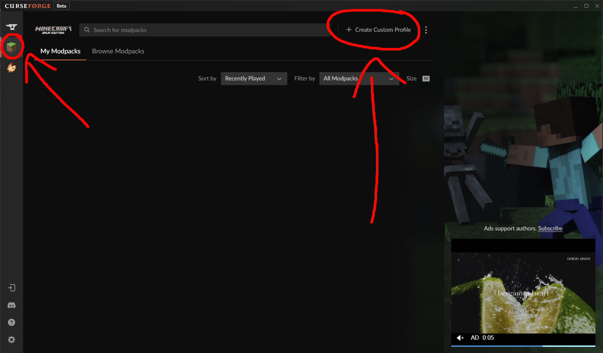
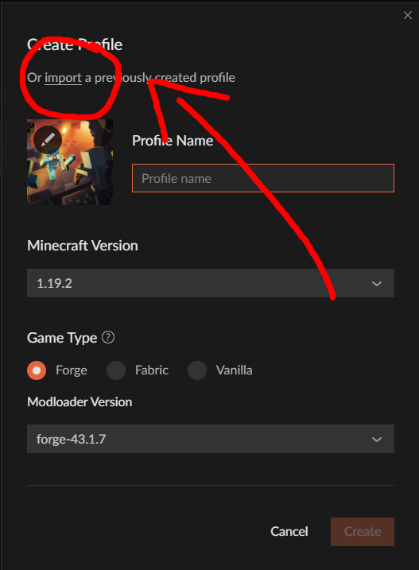

go into #music-and-bot and type "/link" then follow the instructions (only works when the server is up)
Make sure you have minecraft installed and working before starting any of this :)
Download one of those, and then download CurseForge (download). Run the downloaded CurseForge installer and install it like normal.
Once installed, launch CurseForge and make sure you're on the minecraft section (the minecraft icon on the left hand side). Then click the "Create Custom Profile" link at the top (shown below).
In the pop-up, click "import" at the top (shown below), and select the modpack you downloaded earlier (either VG-S5.zip or VG-S5.optifine.zip). The modpack should then automatically install!
Finally, add the server! Go to the "Multiplayer" section in minecraft (yes, launch the game through curseforge) and add a new server with vidyacraft.mcpro.io as the ip. DONE!
note: you might need to configure the controls to work for the zoom key. by default it conflicts with other mods